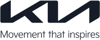

KWDC23
Get Ticket
KWDC2023Koreawide Developer Conference
2023. 07. 18. 10:30 a.m.
Coex Grandballroom, Seoul
Get Ticket
Together,
we can make great things happenKoreawide Developer Conference는
한국 Apple 생태계 구성원들을 위한 가장 큰 축제예요.2009년 아이폰이 한국에서 처음 정식 발매된지 어느새 14년이 흘렀어요.
그동안 한국 Apple 생태계에서 활약해 온 개발자, 기획자, 디자이너 등의 다양한 구성원들 덕분에 Apple 생태계는 무럭무럭 자랄 수 있었죠.
새로운 개발언어, 디자인, 가이드라인들의 등장은 때때로 우리를 힘들게 하기도 했지만, 그 경험들 덕분에 우리는 단단한 뿌리와 함께 성장했어요.
WWDC23에서 발표될 내용들은 우리에게 어떤 변화를 가져다줄까요?
7월 18일 서울에서 함께 모여, 앞으로 만들어나갈 더 다양한 가치들에 대해서 소통해보아요.
we can make great things happenKoreawide Developer Conference는
한국 Apple 생태계 구성원들을 위한 가장 큰 축제예요.2009년 아이폰이 한국에서 처음 정식 발매된지 어느새 14년이 흘렀어요.
그동안 한국 Apple 생태계에서 활약해 온 개발자, 기획자, 디자이너 등의 다양한 구성원들 덕분에 Apple 생태계는 무럭무럭 자랄 수 있었죠.
새로운 개발언어, 디자인, 가이드라인들의 등장은 때때로 우리를 힘들게 하기도 했지만, 그 경험들 덕분에 우리는 단단한 뿌리와 함께 성장했어요.
WWDC23에서 발표될 내용들은 우리에게 어떤 변화를 가져다줄까요?
7월 18일 서울에서 함께 모여, 앞으로 만들어나갈 더 다양한 가치들에 대해서 소통해보아요.
Sponsors
Keystone
Keystone
Platinum
Platinum
Sliver
Sliver
Sliver
Bronze
Special
Speakers
총 4개의 트랙에서 펼쳐질
KWDC23의 다양한 세션을 확인해보세요.
Apple eco-system미국에서 바라본 애플 생태계(feat. WWDC23)Snack ・ 남관식 / Apple Developer Academy @ POSTECH
Snack ・ 남관식
Apple Developer Academy @ POSTECH
보다 더 넓은 세상으로 나아가려 합니다.
WWDC23을 참가하기 위해 미국을 다녀오며 직접 보았던 애플 생태계에 대해 공유합니다.
Apple eco-systemWWDC23 Recapdadahae / charming swift
Apple eco-system애플이 당신의 건강에 미치는 영향링고 / Apple Developer Academy @ POSTECH
링고
Apple Developer Academy @ POSTECH
보다 더 넓은 세상으로 나아가려 합니다.
애플은 HealthKit을 통해 사용자의 건강 데이터를 추적, 관리하고 있어요. 잘 알려지지 않았지만 ResearchKit과 CareKit으로 의료 관련한 데이터를 수집할 수도 있답니다. 애플이 그리는 의료의 미래는 뭘까요?
Apple eco-systemML과 애플의 맛있는 조합, 한 걸음 더 내딛기Jason / Apple Developer Academy @ POSTECH
Jason
Apple Developer Academy @ POSTECH
애플 개발자 아카데미에서 테크멘토로 근무하고 있습니다.
애플이 ML 기술의 복잡성을 어떻게 단순화하고 발전시켜 활용하고 제공하는지 이야기 합니다!
Design10년된 서비스의 디자인 시스템 적용기엽 / 네이버
BusinessiOS17 커뮤니케이션 도구의 변화Yong / Kakao
Business유저스토리를 활용한 프로젝트 진행의 장단점도그냥 / 카카오스타일
BusinessTBA킹홍 / TheB
Sponsorship session생성형AI 기반의 에듀테크 플랫폼최삼락 상무 / 웅진씽크빅 Udemy
ProgrammingDeep dive to SwiftUI Animation그린 / 한화생명
ProgrammingSwift 언어 히스토리 탐방라이노 / 비바리퍼블리카
라이노
비바리퍼블리카
코딩의 가능성을 탐구하는 것을 즐깁니다.
Swift 언어가 발전해온 내용들과 올해 추가된 내용들을 리뷰하면서 Swift의 미래에 대한 생각을 나눕니다.
ProgrammingPush Notifications Console 여행하기아렉스 / 식신(주)
ProgrammingLiDAR 스캐너의 활용법: Point Cloud Data, Object CaptureTony /
Programming좋은 앱은 무엇일까요? 접근성 지원을 위한 iOS 개발자의 첫걸음루카스 ・ 허성진 / 인포마이닝
루카스 ・ 허성진
인포마이닝
귀여움받는 유능한 개발자가 되기 위해 열심히 노력하고 있습니다.
애플의 접근성 지원에 대한 진정성과, 개발자가 접근성 지원을 하면 얻는 이점을 이야기해 봅니다.
Programming매크로 부수고 부서지기naljin / 지마켓
Programming매크로 부수고 부서지기소들이 / 아프리카TV
Programming글로벌 앱을 위한 Localization: 번역은 시작일뿐애플사이다 / 백패커(아이디어스)
애플사이다
백패커(아이디어스)
지속 가능한 성장을 지향합니다
새로운 Localization 기능을 알아보고, 글로벌 앱 예시를 통해 기술적 고민과 해결 방법을 소개합니다.
Programming우리가 모듈화를 할 수 밖에 없었던 이유제온 / 카카오뱅크
ProgrammingAR/VR을 위한 Unity고야 / (주)모카포트 대표, Unity certified instructor
ProgrammingSwift concurrency: Good to know김윤재 / LINE PLUS
Timetable
Track 1
09:45 - 10:30
Check-in
10:30 - 10:45
Keynote
11:00 - 12:45
TBA
12:45 - 14:00
점심시간
14:00 - 16:00
TBA
16:00 - 16:10
Closing
Track 2
09:45 - 10:30
Check-in
10:30 - 10:45
Keynote
11:00 - 12:45
TBA
12:45 - 14:00
점심시간
14:00 - 16:00
TBA
16:00 - 16:10
Closing
Track 3
09:45 - 10:30
Check-in
10:30 - 10:45
Keynote
11:00 - 12:45
TBA
12:45 - 14:00
점심시간
14:00 - 16:00
TBA
16:00 - 16:10
Closing
Track 4
09:45 - 10:30
Check-in
10:30 - 10:45
Keynote
11:00 - 12:45
TBA
12:45 - 14:00
점심시간
14:00 - 16:00
TBA
16:00 - 16:10
Closing
Organizer
unnnyong
2017년부터 한국과 일본 iOS 개발자 커뮤니티의 기여를 시작한 소통형 개발자.
Lingo
애플 생태계 안에서 해적선을 운영하는 캡틴 링고후크. 검은 코딩토끼를 본 적이 있다면 당신도 이미 해적선의 선원.
Godrm
달콤한 스위프트와 후덕한 오브젝티브-C의 혼혈왕자
Atlas
모니터 바깥 세상에서 커피 한 잔을 함께 즐길 수 있는 대화법을 연구하고 있습니다!
커피 한 잔 어떠세요? ☕️
커피 한 잔 어떠세요? ☕️
Noah
Live curiously!
호기심으로 더 성장하는 개발자가 되고 싶습니다:) 개발 이야기를 하는 것을 가장 좋아합니다 :)
호기심으로 더 성장하는 개발자가 되고 싶습니다:) 개발 이야기를 하는 것을 가장 좋아합니다 :)
SongCool
유저리서치, 제품디자인, 초록들과 조경에 관심이 많은 메이커 SongCool입니다.
szzang
다양한 사람들과 많은 이야기를 나누는것을 좋아하는 개발자 입니다 :)
Leeo
iOS 커뮤니티에 도움을 받아 성장하고 지금은 커뮤니티에 도움을 돌려주고 있습니다. 더 많은 사람들을 만나 다양한 이야기를 듣고 싶어요!
황지희 (Jee.e)
빠른 길보다 바른 길을 가는, 꾸준함의 힘과 도전의 가치를 아는 디발자입니다 :D
이동헌
즐거운 개발 문화를 만들어 나가고 싶어요.
pete
실례지만, 어떻게 지평 좌표계를 고정하셨나요?
Dora
물음표 해결에 집요한 보통의 디자이너입니다. 사람 알아가는 것을 좋아해요!
Sujin Lee
HIG 톺아보기가 취미입니다. 스티브 잡스의 ‘사람과 아이디어는 마찰과 소음을 통해 아름답게 빛나게 된다’는 말을 좋아합니다. 이전에는 PM으로 일했고, 현재는 IT업계를 지망하는 분들에게 IT업계 Business 직무의 재미를 전파하고 있습니다.
Toby
세상을 더 편리하게 바꾸고 싶은 iOS 개발자 Toby입니다!
vivi
🗣️말하기 👂듣기 ✍️쓰기를 좋아하는 개발자 vivi 입니다!
ian
세상을 이롭게 하는 기술력을 갖추고 싶습니다.
KangKyung
러닝과 고양이를 사랑합니다😻
Selina
음악을 사랑하는 개발자입니다!
Jiin Heo (Jini)
저는 html로 코딩하는거 좋아합니다.
예니(Yeni)
Code Pray Love
Rinda
빈틈을 매꿔주는 디자이너 Rinda입니다!
Yena
사용자의 목소리를 경청하는 디자이너가 되고 싶습니다!
Indivisual Sponsor커뮤니티를 함께 만들어갈 기회!
· 개인 후원자들간의 네트워크 시간이 제공됩니다.
· 단체 사진 촬영이 포함되어 있습니다.
· 특별 뱃지와 우선 질문권이 제공됩니다.총 수량 50개₩300,000
자그마한 이벤트도 열지 못했던 커뮤니티가 1,000명이 넘는 사람을 모을 수 있을 만큼 성장했습니다.
하지만 KWDC23은 여기서 멈추지 않고, 우리가 사랑하는 커뮤니티를 더욱 성장시키고자하는 꿈을 갖고 있습니다.
이 꿈을 실현시키기 위해서는 많은 분들의 도움이 필요합니다!
여러분의 후원금은 오직 성숙한 커뮤니티를 만들어가는 과정에만 사용될 것을 약속드리며, 많은 분들의 기여를 기다립니다.
후원자 분들을 위해 소소한 혜택과 KWDC23의 진심을 담은 감사 표현이 준비되어 있습니다.
· 개인 후원자들간의 네트워크 시간이 제공됩니다.
· 단체 사진 촬영이 포함되어 있습니다.
· 특별 뱃지와 우선 질문권이 제공됩니다.총 수량 50개₩300,000
📍
Coex Grandballroom, Seoul
General Ticket
₩68,000
티켓 구매
· 티켓은 총 1,100매 입니다.
· 티켓 종류에 상관없이 참가자들은 행사에서 제공되는 세션, 이벤트 참가, 굿즈를 수령할 수 있습니다.
· 티켓은 한정된 수량으로 판매됩니다. 판매 일정보다 빠르게 매진될 수 있습니다.
· 티켓 종류에 상관없이 참가자들은 행사에서 제공되는 세션, 이벤트 참가, 굿즈를 수령할 수 있습니다.
· 티켓은 한정된 수량으로 판매됩니다. 판매 일정보다 빠르게 매진될 수 있습니다.
Scholarship Ticket
₩45,000
티켓 구매
· 티켓은 총 150매 입니다.
· 티켓 종류에 상관없이 참가자들은 행사에서 제공되는 세션, 이벤트 참가, 굿즈를 수령할 수 있습니다.
· 티켓은 한정된 수량으로 판매됩니다. 판매 일정보다 빠르게 매진될 수 있습니다.
· 티켓 종류에 상관없이 참가자들은 행사에서 제공되는 세션, 이벤트 참가, 굿즈를 수령할 수 있습니다.
· 티켓은 한정된 수량으로 판매됩니다. 판매 일정보다 빠르게 매진될 수 있습니다.